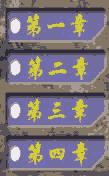
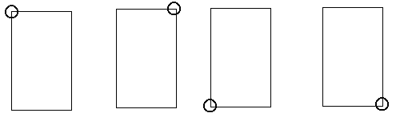
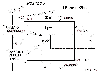

|
|
| 当前位置：电脑报电子版 > 1999 年 > 43 期 > OA专刊 > 让疯狂导演更加疯狂——为Director添加鼠标右键菜单 |
| 《 让疯狂导演更加疯狂——为Director添加鼠标右键菜单 》 |
| 众所周知，动画大导演Director在多媒体制作类软件中一直享有很高的声誉，是进行多媒体创作的极佳工具，与Authware、Action、方正奥思等多媒体著作软件相比，有其不可比拟的优势。 遗憾的是鼠标右键菜单在多媒体应用中就比较少见了（如Director、Vb、Vc等）。它的功能的确非常强大，未激活时处于隐藏状态，不破坏画面，但必要时随时随地都能激活，用于实现一些特殊功能（如前后跳转、开关按钮、调用工具、切换显示等）极为方便。本人经过一段时间的摸索，运用Director独有的MIAW(Movie In A Window)技术很好地实现了鼠标右键菜单的功能。其具体步骤如下： 1创建两个Director文件。一个主程序文件，名为Maindir，另一个是右键菜单文件，名为Rightmenudir。为便于理解和简化操作，我们假定主程序文件是一个多媒体课件，它由四章组成，我们将用鼠标右键菜单实现各章之间的跳转。 这样Rightmenudir文件样式如图1所示： 其中第一、二、三、四章区域可处理成按钮或热区，最好能响应鼠标移入（如字变亮、覆以蓝条等）和鼠标点击（此响应是必须的）两种操作。其尺寸适宜即可（如本实例为100×160)，单位为Pix），若要简单，可在Photoshop中做一张整图（如上所示），然后裁成四张长条图片，输入到Director演员表中，再分别拖到Score窗口，使之按顺序占据第1帧的1、2、3、4通道（此电影仅1帧）。在Stage中使它们重新拼合完整，调整Movie尺寸为100×160并居中。Maindir文件在各章的开始处需进行标记，如:Lesson1,Lesson2,Lesson3,Lesson4。修改Movie属性，使其在屏幕上的位置居中，两个文件放在同一路径。 2解决右键菜单定位问题。在Win98桌面上四处点一点右键，看看菜单的弹出，可以发现其弹出的形式有四种情况，如图2所示： (注：图中圆圈所圈点代表鼠标定位点；MouserightS、MousebottomS分别为鼠标定位点距Main应用程序右边界和下边界的距离；Menuwidth、Menuheight分别为菜单的宽和高，本实例中分别设置为100Pix和160Pix。） A当MouserightS>=Menuwidth且MousebottomS>=Menuheight时，如图2中的2－1。 <Menuwidth且MousebottomS> B当MouserightS=Menuheight时，如图2中的2－2。 C当MouserightS><Menuheight时，如图2中的2－3。>=Menuwidth且MousebottomSBR><menuwidth且mousebottomS> D当mouserightSmenuheight时，如图2中的2－4。 另外我们还必须清楚：我们所创建的应用程序（如Maindir、Menurightdir），其内部坐标系与外部的屏幕坐标系完全是两个概念，内部坐标系是电影内部各种角色以及鼠标定位的依据，而外部屏幕坐标系则是Director电影在屏幕上定位的依据，虽然有时两者相同（如应用程序尺寸等于屏幕分辨率时），但多数情况下是不同的，这里先假定Maindir尺寸为640×480（一般应用尺寸），计算机屏幕分辨率为1024×768，而右键菜单尺寸前面示例中为100×160（此尺寸用户自行掌握），则其位置关系如图3所示： 其中stageleft、stagetop、stageright、stagebottom分别为舞台距屏幕四边的距离；mouseh、mousev分别为鼠标定位点的横纵坐标。 而鼠标定位以应用程序坐标原点为基准，右键菜单（实际是一个窗口电影）则以屏幕的坐标原点为基准，因此要正确定位右键菜单则必须根据以上图2中的四种情况进行必要运算，将鼠标定位点的坐标（相对于主程序）转化为右键菜单的坐标（相对于屏幕）。如图2中的2－1其鼠标右键菜单定位rect(left,top,right,bottom)分别是： left=the mouseh＋ the stageleft top=the mousev＋ the stagetop right=left＋100 bottom=top＋160 具体程序代码如下： （1）maindir脚本 movie脚本： global rightmenuwindow on startmovie set rightmenuwindow to window ″rightmenu″ set the filename of rightmenuwindow to ″rightmenudir″ set the windowtype of rightmenuwindow to 2 set the rect of rightmenuwindow to rect(0,0,0,0) open window rightmenuwindow close window rightmenuwindow end startmovie on rightmousedown set mouserightS=640－the mouseh set mouserightY=480－the mousev if mouserightS>=100 and mouserightS>=160 then l=the mouseh＋the stageleft t=the mousev＋the stagetop else if mouserightS<100 and mouserightS>=160 then l=the mouseh－100＋the stageleft t=the mousev＋the stagetop else if mouserightS>=100 and mouserightS<160 then l=the mouseh＋the stageleft t=the mousev－160＋the stagetop else if mouserightS<100 and mouserightS<160 then l=the mouseh－100＋the stageleft t=the mousev－160＋the stagetop end if set the rect of rightmenuwindow to rect(l,t,l＋100,t＋160) set the visible of rightmenuwindow to true end rightmousedown on mousedown close rightmenuwindow end mousedown on stopmovie forget rightmenuwindow end (2)rightmenudir脚本 movie脚本: on startmovie repeat with x=1 to 4 puppetsprite x,true end repeat end frame脚本(第1帧)： on exitframe go to the frame end sprite脚本： sprite1(即第一章)： on mousedown tell the stage to go to ″lesson1″ close window ″rightmenu″ end sprite2,3,4脚本同上类似，只是把lesson1相应换成lesson2,lesson3,lesson4即可。 再看一下，你的Director是不是更加完美了。 (文/王文山) |
| 下载本期推荐软件 | 页 首 |
| 《电脑报》版权所有，电脑报网站编辑部设计制作发布 |